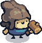
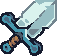
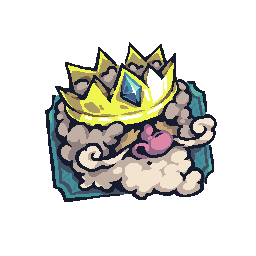

0
0 0
0 0
0

000


Le robot suit une strategie simple et toujours la meme (archerie, maisons, tours sur le chemin annonce, escouades devant l'entree). Le simulateur lui fait jouer 30 parties avec les reglages ci-dessous, meme pas encore appliques.
En jaune : modifie. A droite : la valeur d'origine.
CHARGEMENT…